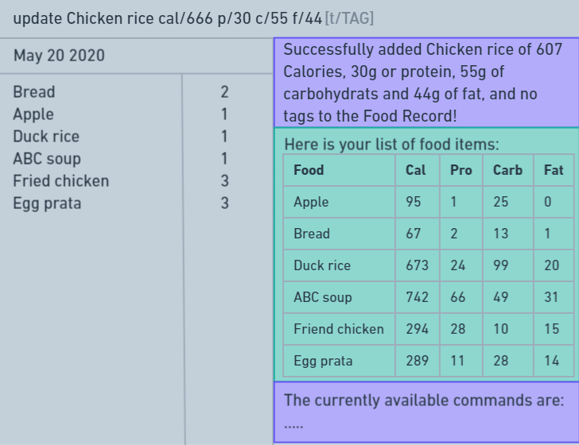

By: Team F11-1 Since: March 2020 Licence: MIT
- 1. Introduction
- 2. Quick Start
- 3. Features
- 3.1. Viewing help :
help - 3.2. Adding a person:
add - 3.3. Listing all Food items in Calgo’s current Food Record :
list - 3.4. Exporting the current Food Record : 'export'
- 3.5. Editing a person :
edit - 3.6. Getting Food items by keywords or Food item values:
find - 3.7. Deleting a person :
delete - 3.8. Clearing all entries :
clear - 3.9. Exiting the program :
exit
- 3.1. Viewing help :
- 4. FAQ
- 5. Command Summary
1. Introduction
Calgo is an all-in-one calorie tracker with deliverable insights to ensure that you are always one step ahead in your fitness goals.
-
For the modern day user who prefers to use a desktop application, Calgo’s Command Line Interface (CLI) works seamlessly with its Graphical User Interface (GUI) to provide fast and accurate usage while presenting results with visual depth and clarity.
-
Fast typists would therefore greatly benefit from not only the speed of processing their input via the CLI but also the input correction methods of Calgo.
2. Quick Start
-
Ensure you have Java
11or above installed in your Computer. -
Download the latest
addressbook.jarhere. -
Copy the file to the folder you want to use as the home folder for your Address Book.
-
Double-click the file to start the app. The GUI should appear in a few seconds.
 -
Type the command in the command box and press Enter to execute it.
e.g. typinghelpand pressing Enter will open the help window. -
You can try experimenting to see the results for yourself! Some example commands:
-
list: lists all Food items currently recorded in the Food Records. -
addn/kiwi cal/125 p/1 c/20 f/3: adds a Food namedkiwito the Food Records with its details saved as: 125 calories, 1 gram of protein, 20 grams of carbohydrates, and 3 grams of fats. -
findbanana: finds the entry banana in the Food Records and returns its details if available; otherwise an error message will be shown. -
exit: exits the Calgo application
-
-
Refer to Section 3, “Features” section below for details of each command.
3. Features
Command Format
-
Words in
UPPER_CASEare the parameters to be supplied by the user e.g. inadd n/NAME,NAMEis a parameter which can be used asadd n/kiwi. -
Items in square brackets are optional e.g
n/NAME [t/TAG]can be used asn/kiwi t/favourite fruitor asn/kiwi. -
Items with
… after them can be used multiple times including zero times e.g.[t/TAG]…can be left empty, or used ast/favourite,t/favourite t/greenetc. -
Parameters can be in any order e.g. if the command specifies
n/NAME p/PROTEINS,p/PROTEINS n/NAMEis also acceptable.
3.1. Viewing help : help
Format: help
3.2. Adding a person: add
Adds a person to the address book
Format: add n/NAME p/PHONE_NUMBER e/EMAIL a/ADDRESS [t/TAG]…
| A person can have any number of tags (including 0) |
Examples:
-
add n/John Doe p/98765432 e/johnd@example.com a/John street, block 123, #01-01 -
add n/Betsy Crowe t/friend e/betsycrowe@example.com a/Newgate Prison p/1234567 t/criminal
3.3. Listing all Food items in Calgo’s current Food Record : list
Shows a list of all Food items in the Food Records, with their respective nutritional values of Calories, Proteins, Carbohydrates, and Fats.
Format: list
3.4. Exporting the current Food Record : 'export'
Provides a human-readable text file (FoodRecords.txt) in the same folder as the Calgo application, containing all Food item records including name, calories, and nutritional values.
-
Address book data are saved in the application automatically after any command that changes the data. There is no need to save manually for this matter.
-
However, to obtain a more readable form of this data, use the
exportcommand.
Format: export
3.5. Editing a person : edit
Edits an existing person in the address book.
Format: edit INDEX [n/NAME] [p/PHONE] [e/EMAIL] [a/ADDRESS] [t/TAG]…
Examples:
-
edit 1 p/91234567 e/johndoe@example.com
Edits the phone number and email address of the 1st person to be91234567andjohndoe@example.comrespectively. -
edit 2 n/Betsy Crower t/
Edits the name of the 2nd person to beBetsy Crowerand clears all existing tags.
3.6. Getting Food items by keywords or Food item values: find
Finds all Food items whose names contain any of the keyword(s), even as an incompletely-spelled word (e.g. by mistake).
Format: find KEYWORD [MORE_KEYWORDS]
-
Alternatively, Food items can also be found by entering a specific value of its attributes, i.e. Calories, Proteins, Carbohydrates, or Fats.
Format:find [cal/CALORIES] [p/PROTEINS] [c/CARBS] [f/FATS] -
Otherwise, an error message will be shown.
Examples:
-
find wI
Returnskiwiandkiwi juice -
find `cal/100 p/25
Returnschocolate protein powder shakeandON protein milkshakewhich have 100 calories and 25 grams of protein -
find
Returns an error message
3.7. Deleting a person : delete
Deletes the specified person from the address book.
Format: delete INDEX
Examples:
-
list
delete 2
Deletes the 2nd person in the address book. -
find Betsy
delete 1
Deletes the 1st person in the results of thefindcommand.
3.8. Clearing all entries : clear
Clears all entries from the address book.
Format: clear
3.9. Exiting the program : exit
Exits the program.
Format: exit
4. FAQ
Q: How do I transfer my data to another Computer?
A: Install the app in the other computer and overwrite the empty data file it creates with the file that contains the data of your previous Address Book folder.
5. Command Summary
-
Add
add n/NAME p/PHONE_NUMBER e/EMAIL a/ADDRESS [t/TAG]…
e.g.add n/James Ho p/22224444 e/jamesho@example.com a/123, Clementi Rd, 1234665 t/friend t/colleague -
Clear :
clear -
Delete :
delete INDEX
e.g.delete 3 -
Edit :
edit INDEX [n/NAME] [p/PHONE_NUMBER] [e/EMAIL] [a/ADDRESS] [t/TAG]…
e.g.edit 2 n/James Lee e/jameslee@example.com -
Find :
find KEYWORD [MORE_KEYWORDS]ORfind [cal/CALORIES] [p/PROTEINS] [c/CARBS] [f/FATS]
e.g.find strawberr jamOR
find cal/100 f/10 -
List :
list -
Export :
export -
Help :
help